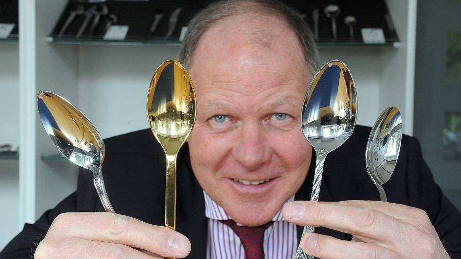

Curt Mertens – Brand Consulting
Analyse der digitalen Präsenz mit Blick auf Auffindbarkeit, Positionierung, Website, SEO, Social Media, Bildwelt und Vertrauenssignale. Ziel ist es, Stärken, Unschärfen und ungenutzte Potenziale sichtbar zu machen.
„Das Problem ist nicht mangelnde Kompetenz, sondern mangelnde digitale Verdichtung."
Curt Mertens bringt eine außerordentliche Vita mit: Als Enkel des Firmengründers führte er das Solinger Traditionsunternehmen Carl Mertens über 42 Jahre – von einer regionalen Besteckmanufaktur zur international ausgezeichneten Designmarke mit Exponaten im MoMA New York, sieben iF Design Awards und zahlreichen Red-Dot-Auszeichnungen. Seit 2020 ist er als unabhängiger Berater und Sparringspartner für mittelständische Unternehmer tätig.
Der digitale Fußabdruck erzählt jedoch noch immer die Geschichte des Unternehmers von gestern, nicht die des Beraters von heute. Wer Curt Mertens googelt, trifft auf eine Chronik des Abschieds – Presseartikel über den Geschäftsführungswechsel 2020, Berichte über die Schließung des Solinger Werks 2023 und eine Handvoll veralteter Profilseiten. Die eigene Beratungsmarke ist digital kaum sichtbar und noch weniger erlebbar.
Die Substanz ist überdurchschnittlich stark. Was fehlt, ist die digitale Übersetzung – eine Präsenz, die Sichtbarkeit erzeugt, Vertrauen aufbaut und Anfragen auslöst.
Diese Analyse verzichtet bewusst auf einen Wettbewerbsvergleich. Curt Mertens ist in seinem Kontext und seiner Vita einzigartig. Sollten zu einem späteren Zeitpunkt digitale Referenzpunkte gesucht werden, geht es ausschließlich um Auftrittsqualität – nicht um inhaltliche Vergleichbarkeit.
„Wer ihn kennt und recherchiert, bekommt ein gemischtes Bild. Wer ihn nicht kennt, findet ihn überhaupt nicht."
Bei der Suche nach „Curt Mertens" erscheinen die eigene Website und das LinkedIn-Profil auf den ersten Plätzen. Darunter folgt eine Chronik der Vergangenheit: der Wikipedia-Artikel zur Carl Mertens Besteckfabrik, Presseartikel über den Geschäftsführungswechsel 2020, Berichte über die Schließung des Werks 2023, Amazon-Produktseiten und Yasni-Altdaten mit fehlerhafter Zeichenkodierung.
Bei thematischen Suchen – etwa nach „Sparringspartner Unternehmer KMU" oder „Berater Mittelstand Solingen" – ist Curt Mertens digital nicht existent. Wer seinen Namen nicht kennt, findet ihn nicht.
Erschwerend kommt ein dreifaches Kollisionsproblem hinzu: Der Unternehmensname „Carl Mertens" überlagert die persönliche Marke. In Firmendatenbanken taucht der Name als „Kurt Mertens" auf. Und in der Bildersuche verwässert ein gleichnamiger US-amerikanischer Sportler die Zuordnung.
„Man versteht die Haltung sehr gut, aber noch nicht sofort, welche konkreten Mandate man jetzt bei ihm anfragen soll."
Die Website spricht Unternehmer direkt an, beschreibt typische Drucklagen treffsicher und positioniert Curt Mertens als Sparringspartner auf Augenhöhe. Der Ton ist persönlich, authentisch und frei von Berater-Jargon. Das ist eine echte Stärke.
Schwächer ist, dass das Angebot breit und wenig paketiert wirkt. Die Zielgruppe ist als „inhabergeführte KMU" benannt, aber weder nach Branche noch nach typischer Situation differenziert.
Die Unternehmerbiografie ist das größte Differenzierungsmerkmal: 42 Jahre Familienunternehmen, Designpreise, Museumssammlungen, Exit-Erfahrung. Diese Geschichte kann kein klassischer Unternehmensberater vorweisen. Aktuell wird sie auf der Website erwähnt, aber nicht als Glaubwürdigkeitsbeweis eingesetzt.
„Der Besucher spürt die Kompetenz, aber weiß nicht, wie der erste Schritt aussieht."
Sechs Themenfelder, vier Rollen – glaubwürdig, aber zu offen. Ein mittelständischer Unternehmer sucht keinen „Berater für Marke und Branding". Er sucht jemanden, der ihm hilft, wenn er vor einer konkreten Entscheidung steht: Wachstumsphase gestalten, Nachfolge vorbereiten, Internationalisierung angehen.
Es gibt keine typischen Beratungsformate, keine Preisanker, kein Einstiegsangebot. Das BrainFleet-Profil ist paradoxerweise inhaltlich stärker aufgestellt als die eigene Website – aber die beiden Kanäle verstärken sich nicht gegenseitig.
„Die Website funktioniert als digitale Visitenkarte, aber noch nicht als Akquiseinstrument."
Ein konsequent in Schwarz-Weiß gehaltener Onepager. Der Logoschriftzug „CURT MERTENS" in Versalien wirkt stark, der Claim „Brand Consulting" darunter fast beiläufig. Die Texte sind klar und für Entscheider relevant. Der Ton ist authentisch. Die Textqualität ist eine echte Stärke.
Was fehlt: Navigation, Unterseiten, Referenzen, Insights. In der Google-Suche existieren lediglich drei URLs: Startseite, Impressum, Datenschutz. Die Schwarz-Weiß-Ästhetik der Website steht im Widerspruch zu den farbigen Social-Media-Profilen. Bei einem Zugriffsversuch trat ein Serverfehler auf – die Seite war zeitweise nicht erreichbar.
„Der Engpass ist nicht Technik, sondern fehlende inhaltliche Andockfläche."
Drei indexierte Seiten bieten keine Fläche für thematische Autorität. Es gibt keine strukturierten Daten, keine Meta-Descriptions, keine Content-Strategie und kein Google Business Profile. Weder bei Brand Searches noch bei thematischen Suchen wird die Seite gefunden.
Der größte Hebel liegt nicht in der Technik, sondern im Content: Fachbeiträge, Standpunkte, Cases, Interviews. Ein regelmäßig bespielter Insights-Bereich würde sowohl Sichtbarkeit als auch Glaubwürdigkeit deutlich erhöhen.
„Gerade bei einem Berater, der Klarheit und Struktur verkauft, fallen solche Widersprüche auf."
Auf der Website steht Neuenhofer Strasse 11. Im Impressum derselben Website steht Widderter Strasse 64. Ältere Einträge zeigen eine andere Telefonnummer. Das XING-Profil positioniert Curt Mertens weiterhin als „Senior Projekt Direktor" in der „Besteck- und Schneidwarenbranche" – eine Rolle, die er seit 2020 nicht mehr innehat. In Firmendatenbanken taucht sein Name als „Kurt Mertens" auf. Zwei aktive Domains senden unterschiedliche Signale.
„Es gibt kein einziges Bild, das Curt Mertens in seiner aktuellen Rolle als Berater zeigt."
Die Bildersuche liefert ein fragmentiertes Bild: IHK-Vizepräsident im dunklen Anzug mit Krawatte (ca. 2013). Unternehmer mit Leidenschaft, der vier Löffel vor sein lächelndes Gesicht hält (ca. 2015). Carl Mertens Messestand zum 100-jährigen Jubiläum (2019). Die Bilder sind qualitativ gut und zeigen einen sympathischen, authentischen Menschen.
Das Problem ist die Kontextlosigkeit: Keine Beratungssituation, kein Gespräch mit einem Kunden, kein Moment des gemeinsamen Denkens. Die Schwarz-Weiß-Website steht im Widerspruch zu den farbigen Profilbildern auf LinkedIn und BrainFleet.

„Außerordentliche Credentials, die digital kaum sichtbar sind."
Sieben iF Design Awards. Red Dot Design Awards. Sammlungen im MoMA New York, Museum für Angewandte Kunst Wien, Germanisches Nationalmuseum Nürnberg. Bestätigter Vorsitzender des IHK-Außenwirtschaftsausschusses (November 2025). Vertreter der Bergischen Wirtschaft im DIHK-Außenwirtschaftsausschuss in Berlin. Stiftungsvorstand Deutsches Klingenmuseum. Vorstand Institut für Produktinnovationen der Bergischen Universität Wuppertal. BrainFleet-Mitglied.
Diese Credentials tauchen auf der eigenen Website mit keinem Wort auf.
Curt Mertens braucht nicht zuerst eine neue Website, sondern zuerst eine klarere digitale Erzählung. Die richtige Reihenfolge ist entscheidend.
Bevor konkrete Maßnahmen sinnvoll sind, braucht es eine ehrliche Antwort auf eine grundlegende Frage: Wie aktiv wollen Sie digital sichtbar sein – und für wen?
Für Menschen, die Sie bereits kennen und online nach Ihnen suchen. Ziel ist nicht neue Sichtbarkeit, sondern Konsistenz und Glaubwürdigkeit: ein aktueller, widerspruchsfreier digitaler Fußabdruck, der Ihre heutige Rolle als Berater und Sparringspartner klar widerspiegelt.
Für den Fall, dass Sie sich auch digital aktiv als Berater bewerben möchten – mit einem klaren Narrativ, regelmäßiger Präsenz und einer Haltung, die auch Neukontakte anspricht. Das bedeutet mehr als Geradeziehen: Es bedeutet, eine Stimme zu entwickeln und diese konsequent zu bespielen.
„Der digitale Fußabdruck erzählt noch immer die Geschichte des Unternehmers von gestern, nicht die des Beraters von heute."
Curt Mertens hat inhaltlich stärkere Credentials als die meisten vergleichbaren Berater. Seine Vita mit 42 Jahren eigenem Unternehmertum, einer international ausgezeichneten Designmarke und aktiven Ehrenämtern auf höchster Ebene ist einzigartig im deutschen Mittelstandsumfeld.
Das Problem ist ausschließlich die digitale Sichtbarmachung. Das Verhältnis zwischen Substanz und Sichtbarkeit ist stark unausgewogen. Genau das ist die Chance.
Nicht eine neue Website als Startpunkt, sondern zuerst eine klarere Erzählung, ein konkreteres Angebot, ein bereinigtes Suchbild und ein sauber aufgesetztes LinkedIn-Profil. Daraus ergibt sich die richtige Website-Entscheidung – nicht umgekehrt.
Social Media
Das LinkedIn-Profil existiert mit 664 Followern und einer starken Headline: „40 Jahre Erfahrung als Unternehmer. Ich weiß, was es heißt, ein KMU durch Höhen und Tiefen zu führen." Diese Headline ist differenzierend und treffsicher. Das Problem liegt in der Aktivität: keine erkennbare Content-Strategie, kein regelmäßiges Posting.
Das XING-Profil schadet aktiv. Facebook, Instagram und YouTube spielen für die Zielgruppe keine Rolle. Auf der Website selbst finden sich keine Links zu Social-Media-Profilen.